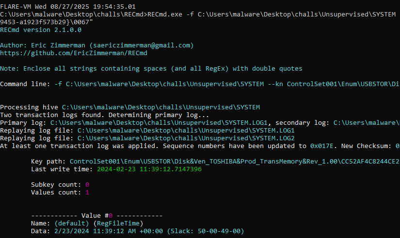

Unsupervised
Task 1
The Sherlock archive contains two files. A text file containing important files and directories with these contents:
File and Directory Names are obfuscated for security reasons.
Documents (directory) "C:\Users\<Username>\Documents"
* ....ness .....sals (directory)
** ........ ...... ltd.docx (file)
** ........ ..-... Inc.docx (file)
** ........ .. ..... corp.docx (file)
* ....rnal ...ance (directory)
** ....... ....nts.xlsx (file)
*......... docs (directory)
** ........ ..ads.xlsx (file)
* ........ ...ance (directory)
** ........ .....nts.xlsx (file)
And an .ad1 disk image file. I will use FTK Imager to investigate the image.
I'll extract the SYSTEM hive and its transaction logs by right-clicking on them and choosing export files
I'm expecting values like that to be stored inside the SYSTEM hive, hence why this is the first file I'll be looking into.
I will use RECmd.exe to search through the SYSTEM hive for the word timezone
RECmd.exe -f C:\Users\malware\Desktop\challs\Unsupervised\SYSTEM --sa timezone
The ControlSet001\Control\TimeZoneInformation key looks interesting here. I'll get its subkeys and their values.
RECmd.exe -f C:\Users\malware\Desktop\challs\Unsupervised\SYSTEM --kn ControlSet001\Control\TimeZoneInformation

This reveals that the computer's timezone is West Asia Standard Time, which is five hours ahead of UTC time.
UTC+05:00 will be my answer to question 1.
Task 2
By looking at the directory structure with FTK Imager, I can see which user directories were present on the computer.
My answer to question 2 will be MrManj
Task 3
The information about USB drives connected to the machine is stored under the ControlSet001\Enum\USBSTOR registry key. I'll look through it using RECmd.exe.
RECmd.exe -f C:\Users\malware\Desktop\challs\Unsupervised\SYSTEM --kn "ControlSet001\Enum\USBSTOR"
I can see 7 devices in total. However, the first 4 have nearly identical registration times, which could indicate that they came from a single multi-card reader being plugged in.
The last 3 look like valid USB drives, with vendors and legitimate-looking device names.
I'll use 3 as my answer to task 3.
Task 4
After looking more into the TOSHIBA USB drive, I found what looked like a bunch of GUIDs stored in the properties subkey.
RECmd.exe -f C:\Users\malware\Desktop\challs\Unsupervised\SYSTEM --kn "ControlSet001\Enum\USBSTOR\Disk&Ven_TOSHIBA&Prod_TransMemory&Rev_1.00\CC52AF4C8244CE215E7DEBD4&0\Properties"
Each of these contains segregated information about the device, how it was configured, where it was plugged in and timestamps associated with its installation and removal date.
The one that I need to answer this question will be {83da6326-97a6-4088-9453-a1923f573b29}, as its subkeys hold the timestamp data.
0003 contains data stored in hex format. I used CyberChef to decode the data back to a readable format. I also removed some obsolete parts to make the text clearer.
disk.inf:6d166ee9677c725c:disk_install.NT:10.0.19041.1865:GenDisk
The 0003 subkey contains information about the driver installation for this USB device.
On the other hand, decoding the string from 000A returns the vendor and product ID, followed by the serial number of the flash drive itself.
USB\VID_0930&PID_6544\CC52AF4C8244CE215E7DEBD4
This could be useful later, but for now, I'll focus on the remaining subkeys.
0064 - First install time.
0065 - Install time.
0066 - Last connected time.
0067 - Last removal time.
The values of 0064 and 0065 should be the same, since the USB drive was plugged in for the first time, then never plugged in again.
2024-02-23 11:37:50 will be my answer to question 4.
Task 5
This information will be listed under the 0067 subkey from the earlier task.

2024-02-23 11:39:12 will be my answer to question 5.
Task 6
The first thing I want to check is whether there are any recoverable jump lists in the disk image.
Jump lists provide quick access to recently opened files and applications, and crucially, they also store the absolute path to that file.
After something was copied onto the USB drive, a jump list should've been created.
The files were located under Users\MrManj\AppData\Local\Roaming\Microsoft\Windows\Recent. I'll extract them from the image.
I will use JLECmd.exe from Eric Zimmerman to look through these files.
JLECmd.exe -d Unsupervised\AutomaticDestinations --csv test
I can see that the USB drive's letter is E, and that the Documents folder was copied.
Documents will be my answer to question 6.
Task 7
Scrolling down, I can see a few repeating subfolders.
Important docs
Business Proposals
Work Documents
External finance
Internal Finance
I will use Business Proposals as my answer to task 7.
Task 8
Eddie opened exactly one .xlsx and one .docx file.
Business Leads.xlsx will be my answer to task 8.
Task 9
The answer is in a screenshot from task 8.
Task 10
I spent some time looking through the SYSTEM hive, not being able to find anything relate to the volume name of this TOSHIBA USB.
Then I moved to the SOFTWARE hive, extracting it from the disk image like I did with the SYSTEM hive before.
RECmd.exe -f C:\Users\malware\Desktop\challs\Unsupervised\SOFTWARE --sa "TOSHIBA
There was exactly one match. I'll read the matched key.
RVT-9J will be my answer to question 10.
Task 11
The answer to this question was already revealed while solving task 8. The answer to this question is E
Task 12
The hint immediately made me think about least significant bits and steganography, but I had not seen a single image so far.
There were no images visible in FTK Imager either, so I decided to extract the entire user directory onto my machine and look through it manually.
And sure enough, there were a lot of hidden thumbcache files which FTK Imager did not show for some reason.
Windows uses thumbcache databases to store thumbnails/icons of files and images in the filesystem. I will use thumbcacheviewer to look through them.
https://github.com/thumbcacheviewer/thumbcacheviewer/tree/master
And after loading a bunch of those databases, I eventually found something that looks like Eddie's CV.
Homer will be my answer to question 12.
Task 13
I followed the steps outlined in Task 4 in order to read from the 000A subkey of the unbranded drive. I picked the bottom one, since it was the one whose vendor I did not recognize.
ControlSet001\Enum\USBSTOR\Disk&Ven_VendorCo&Prod_ProductCode&Rev_2.00\4509611187672529927&0\Properties\{83da6326-97a6-4088-9453-a1923f573b29}\000A
After decoding the data from hex, I was left with 3 values.
Vendor ID - 346D Product ID - 5678 Serial Number - 4509611187672529927
I then searched for the vendor with this exact string. USB vendorID 346D
And the first result was a USB ID database, with the exact VID I searched for.
https://the-sz.com/products/usbid/index.php?v=0x346D
I will definitely be saving this website for later use, but for this question, Shenzhen SanDiYiXin Electronic Co.,LTD will be my answer.
Solved!